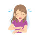

Pruritus
Rx
1.Lotion Calamine N=1 q8h
Or Tab Hydroxyzine N=20 q8h
Or Oint Hydrocortisone 1% N=1 q12h
Or Cap Doxepin 25mg N=30 daily
Or Elixir Diphenhydramine N=1 q8h
Cholestasis:
1.Sachet Cholestyramine 4gr N=30 q12h
2.Cap Ursobol 300mg N=60 2tab q12h
نکته: خارش میتونه علل سیستمیک و دارویی ویا پوستی داشته باشد
نکته: رفع عامل زمینه ای ومرطوب نگه داشتن تاثیر بسزایی در بهبودی دارد.
نکته: برای درماتیت ها از هیدروکورتیزون و موارد ژنرالیزه از هیدروکسی زین برای اطفال و خانم های حامله از دیفن هیدرامین و برای موارد مقاوم ، دوکسپین تجویز کنید.
بیماری های پوستی
1️⃣ درماتیت ها
2️⃣ درماتیت هرپتی فرم
3️⃣ کهیر
4️⃣ واکنش دارویی
5️⃣ گال
6️⃣ پسوریازیس
7️⃣ پمفیگویید
8️⃣ خشکی پوست
9️⃣ گزش حشرات
بیماری های سیستمیک
1️⃣ بیماری های کبدی : کلستاز ، سیروز و...
2️⃣ بیماری های هماتولوژیک
3️⃣ بیماری های کلیوی
4️⃣ بیماری های تیروئیدی
5️⃣ عفونت ها
بیماری های روانپزشکی : اضطراب ،وسواس و ...
بیماری های نوروپاتیک : نورالژی post herpetic و ...